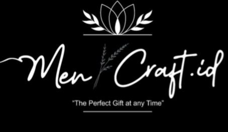
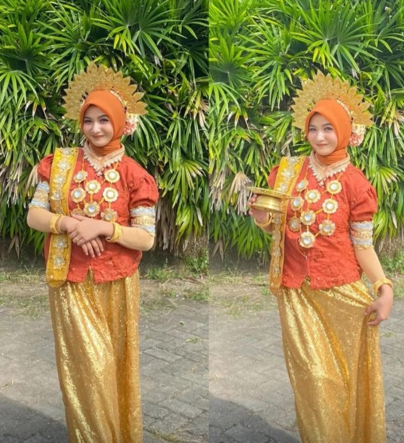
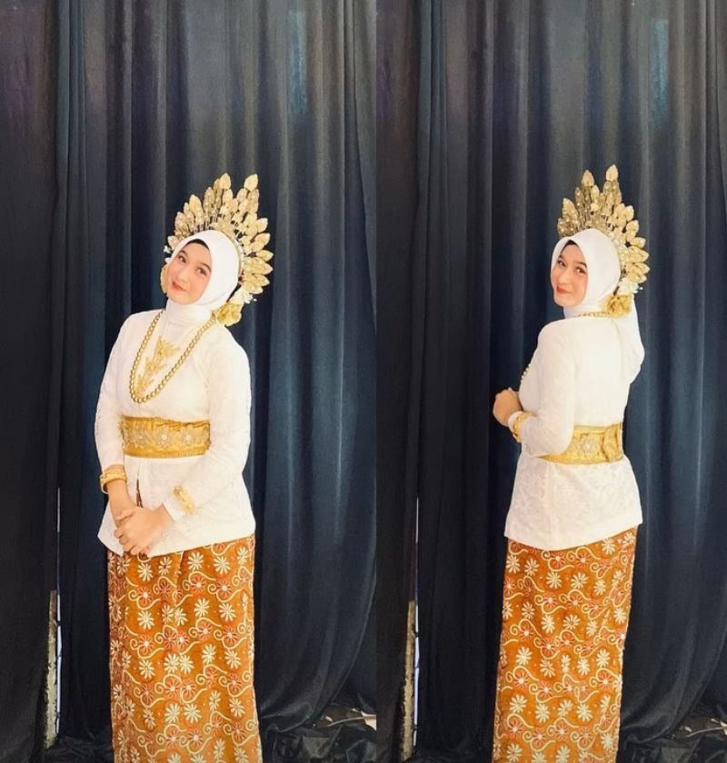
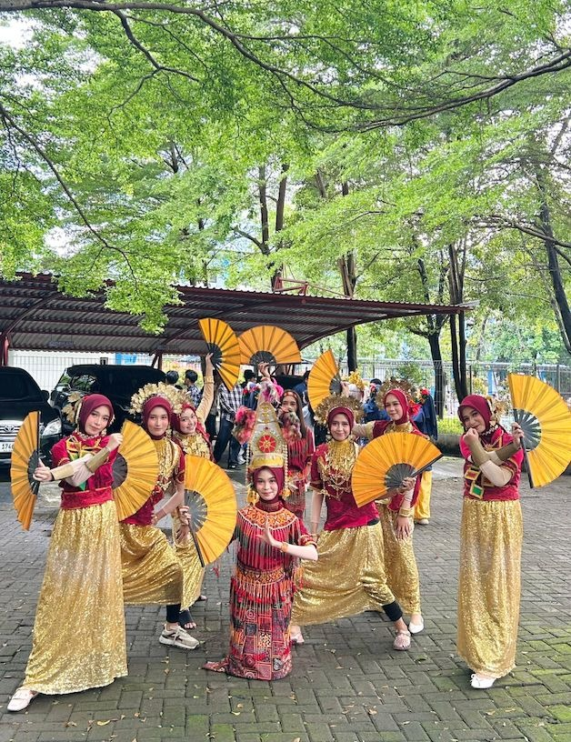
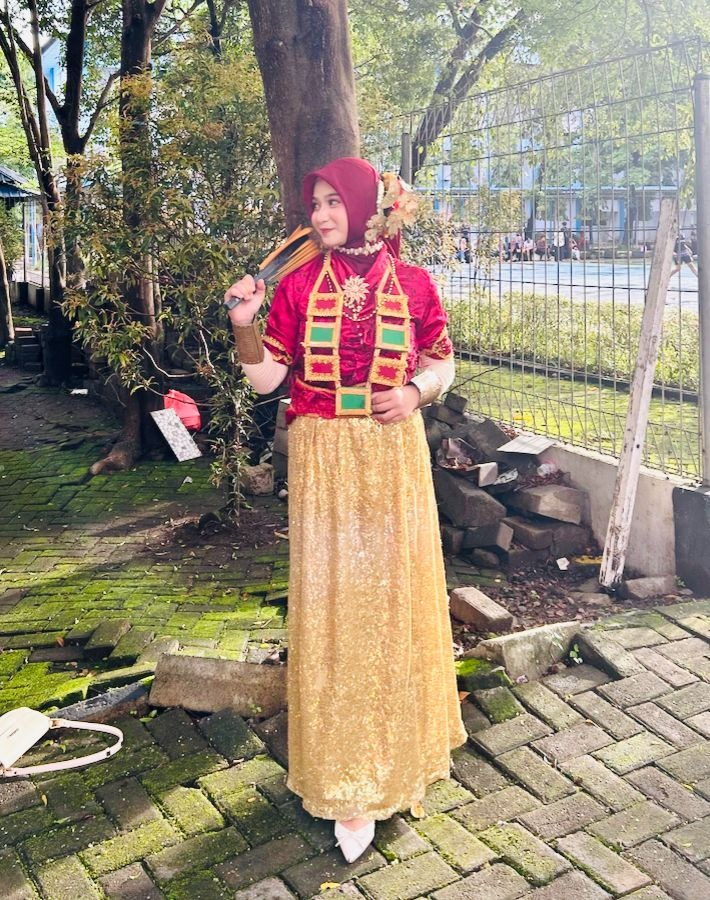
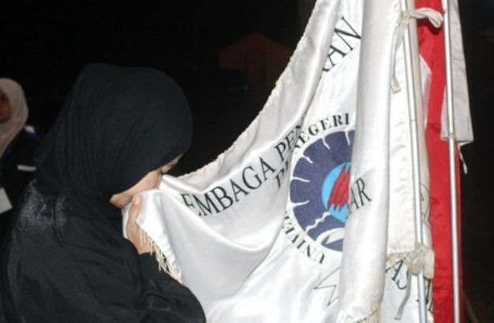
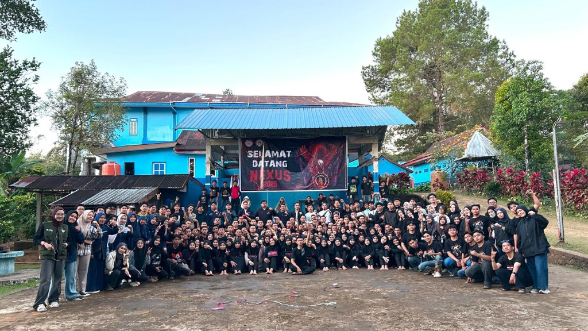
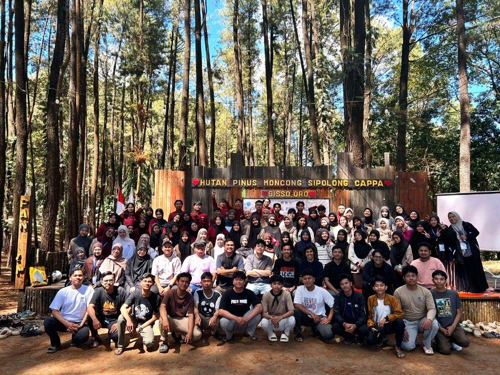

Informasi Biodata Lengkap
| Nama Lengkap: | Nayla Azzahra R |
| Program Studi: | Teknik Komputer |
| Kelas / Angkatan: | Kelas C / 2025 |
| Mata Kuliah: | Praktikum Pemrograman Web |
| Fokus Minat: | Web Design, Jaringan Komputer & IoT |
| Hobi Utama: | Seni Tari Tradisional Nusantara (Traditional Dance) |
| Organisasi: | LPM Penalaran UNM & JTIK (Nexus 2025) |
| Platform Koding: | HTML5, CSS3, Visual Studio Code, Git, GitHub Pages |
Proyek Aplikasi: mencraft.id

mencraft.id
The Perfect Gift at any Time
mencraft.id adalah aplikasi sederhana untuk mempermudah pemesanan bucket. Saya membuatnya menggunakan Python sebagai salah satu proyek untuk belajar membuat aplikasi.
Fitur Utama mencraft.id
Pilih Bucket
Memilih jenis bucket yang tersedia beserta harga melalui menu pilihan.
Tambah Pesanan
Menambahkan bucket ke daftar pesanan dan menentukan jumlah yang ingin dipesan.
Kelola Pesanan
Mengubah atau menghapus pesanan yang sudah dimasukkan ke dalam daftar.
Checkout
Menyelesaikan transaksi dan menyimpan riwayat pesanan ke dalam file JSON.
Hobi Seni Tari & Pengalaman Organisasi
Seni Tari Tradisional Nusantara
Minat & BudayaMengekspresikan kecintaan pada seni budaya leluhur, melatih kedisiplinan, keanggunan, serta harmonisasi ritme gerak melalui seni tari tradisional nusantara:




Pengalaman Organisasi Mahasiswa
Leadership & RisetAktif mengembangkan kapasitas diri, kepemimpinan, daya nalar ilmiah, serta memperluas relasi melalui keikutsertaan aktif dalam organisasi kemahasiswaan:

LPM Penalaran UNM
Lembaga Penalaran & Riset Ilmiah Mahasiswa Tingkat UniversitasLembaga penalaran dan riset ilmiah mahasiswa tingkat Universitas Negeri Makassar guna mengasah pola pikir kritis, riset akademis, karya tulis ilmiah, dan kepemimpinan.

Anggota Formal JTIK (NEXUS 2025)
Lembaga Kemahasiswaan Jurusan Teknik Informatika & Komputer FT-UNMBagian dari keluarga besar mahasiswa JTIK FT-UNM, aktif memperkuat solidaritas angkatan NEXUS 2025, kolaborasi kegiatan teknologi, dan relasi profesional.

Pengembangan Kapasitas Diri & Kepemimpinan
Pelatihan Karakter & Kepemimpinan Organisasi di Alam TerbukaProgram pembinaan kepemimpinan luar ruang di Hutan Pinus Moncong Sipolong guna membentuk ketangguhan mental, adaptabilitas, serta komunikasi efektif dalam tim kerja.
Target & Peta Rencana 2-3 Tahun Kedepan
Eksplorasi Teknologi Web & Arsitektur Komputer
Mendalami teknologi web modern secara mendalam (HTML, CSS, JavaScript, framework modern) dan logika pemrograman serta sistem mikrokontroler.
Implementasi Proyek & Kompetisi IT
Membangun proyek sistem informasi berbasis jaringan komputer dan aktif mengikuti kompetisi di bidang IT untuk memperluas portofolio praktis.
Magang Industri & Penyelesaian Tugas Akhir
Mengikuti program magang industri bersertifikat di perusahaan dan menyelesaikan tugas akhir Teknik Komputer yang inovatif serta bermanfaat.